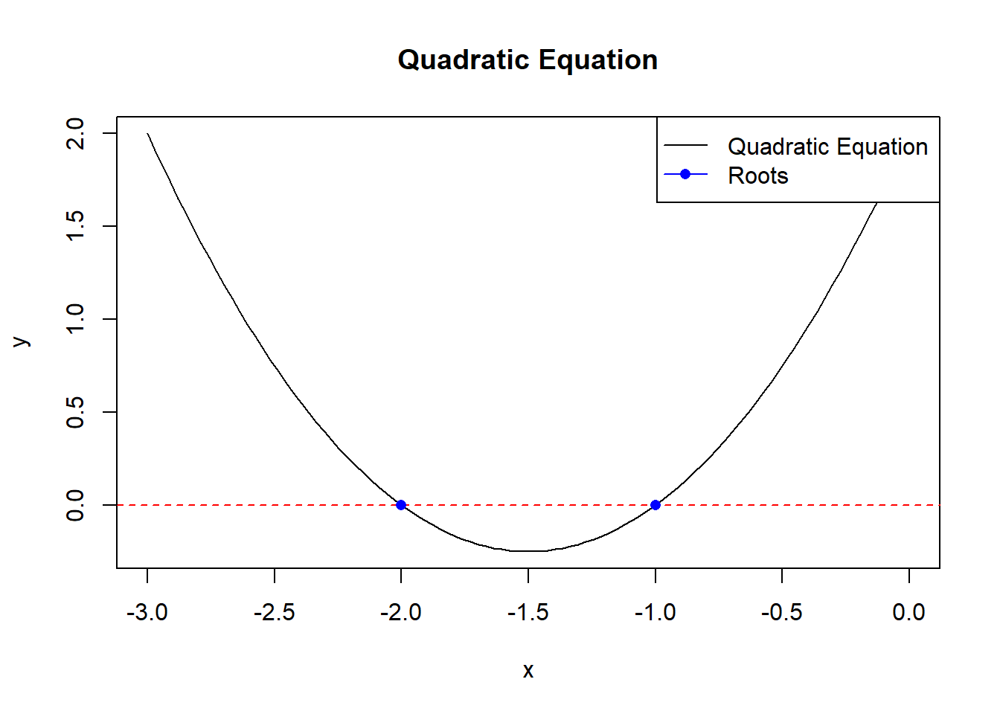

#| define the quadratic functionquadratic_function <-function(a, b, coef_c) {print(paste0("You have chosen the quadratic equation ", a, "x^2 + ", b, "x + ", coef_c, ".")) discriminant <- (b^2) - (4*a*coef_c)if(discriminant <0) {return(paste0("This quadratic equation has no real numbered roots.")) }elseif(discriminant >0) { x_int_plus <- (-b +sqrt(discriminant)) / (2*a) # root1 x_int_neg <- (-b -sqrt(discriminant)) / (2*a) # root2return(paste0("The two x-intercepts for the quadratic equation are ", x_int_plus, " and ", x_int_neg, ".")) }else#discriminant = 0 case x_int <- (-b) / (2*a)return(paste0("The quadratic equation has only one root. This root is ", x_int))}#| Set the parametersa <-1b <--1coef_c <--2quadratic_function(1,-1,-2)
[1] "You have chosen the quadratic equation 1x^2 + -1x + -2."
[1] "The two x-intercepts for the quadratic equation are 2 and -1."
Show a graph of f(x) versus x for ∈ (−3,3). Do not show the code, only the graph.
Erase the PDF report and reproduce it but this time using a=1,b=2,c=5.
#|Set parameters vol2:a <-1b <-2coef_c <-5#| recompute the y values y_values <-quadratic_equation(x_values, a, b, coef_c)#| Plot the quadratic equation for x in (-3, 3) and updated parametersplot(x_values, y_values, type ="l", col ="blue", lwd =2,main ="Quadratic Equation: f(x) = ax^2 + bx + c",xlab ="x", ylab ="f(x)")#| Add a horizontal line at y = 0 for referenceabline(h =0, col ="red", lty =2)
Erase the PDF report and reproduce it but this time using a=1,b=3,c=2. Change the range of x to range that clearly shows the roots.
#| Quadratic equation coefficientsa <-1b <-3c <-2#| Calculate rootsroot1 <- (-b +sqrt(b^2-4*a*c)) / (2*a)root2 <- (-b -sqrt(b^2-4*a*c)) / (2*a)#| Choose a range around the rootsx_range <-seq(root1 -2, root2 +2, length.out =100)#| Evaluate the quadratic equation for the chosen rangey <- a * x_range^2+ b * x_range + c#| Plot the quadratic equationplot(x_range, y, type ='l', main ='Quadratic Equation', xlab ='x', ylab ='y')abline(h =0, col ='red', lty =2) # Line at y=0points(c(root1, root2), c(0, 0), col ='blue', pch =16) # Mark rootslegend('topright', legend =c('Quadratic Equation', 'Roots'), col =c('black', 'blue'), lty =1:1, pch =c(NA, 16))

Create a markdown page with the results for this last set of values, but this time showing the code.
quadratic_function(1,3,2)
[1] "You have chosen the quadratic equation 1x^2 + 3x + 2."
[1] "The two x-intercepts for the quadratic equation are -1 and -2."